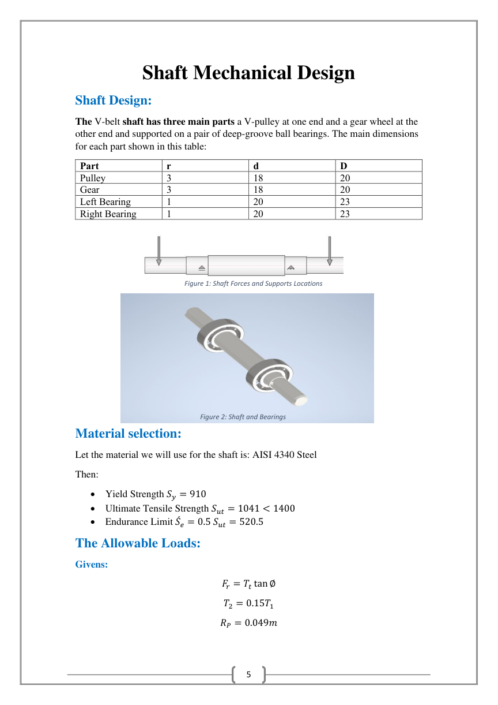
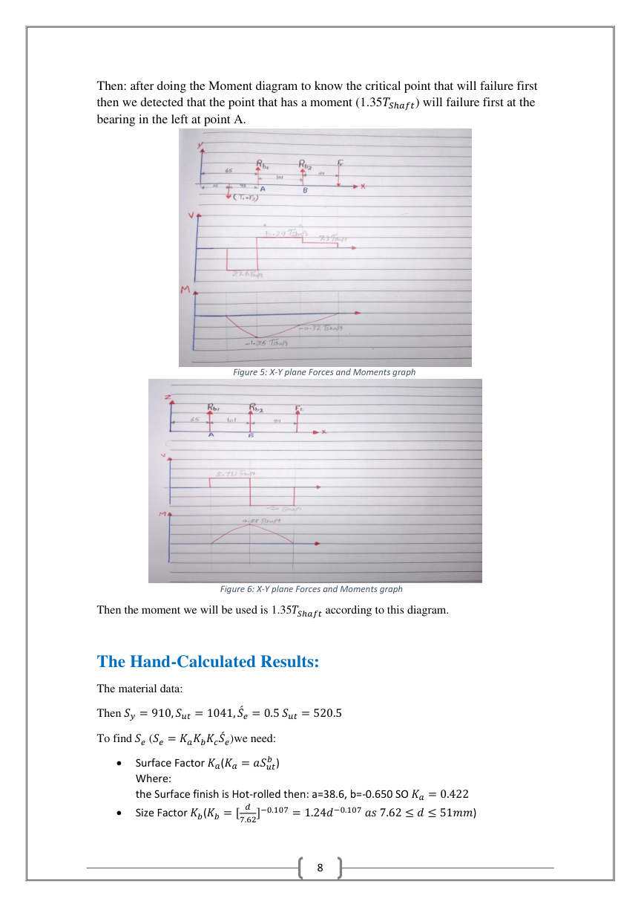
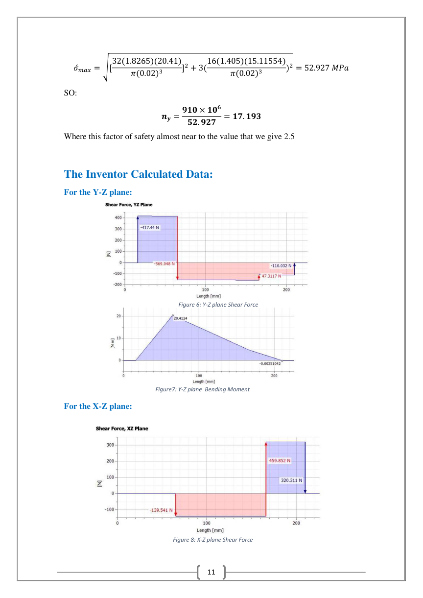
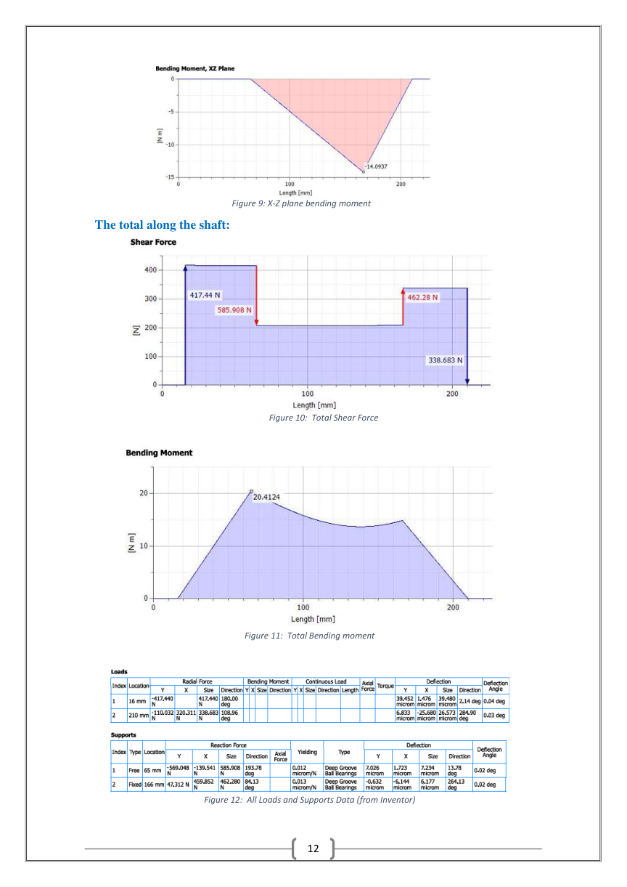
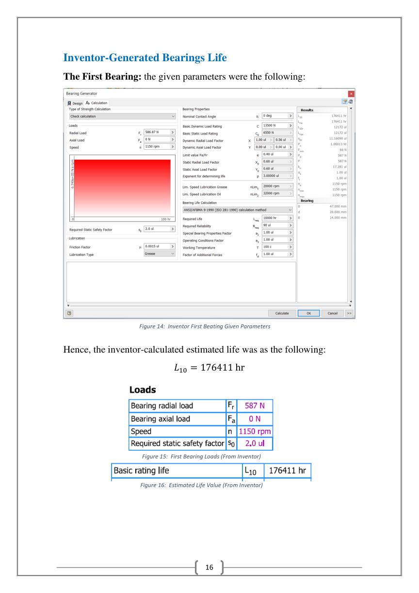
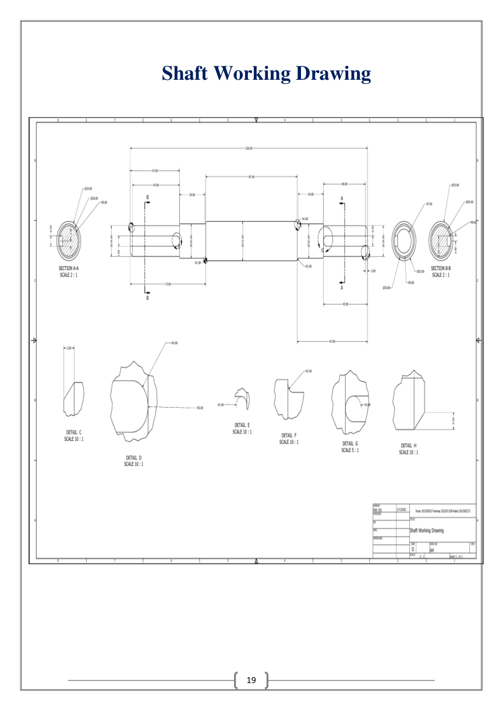

Project overview
This team project examined a mechanical power-transmission assembly comprising a V-belt pulley, spur gear, main shaft and two deep-groove ball bearings. The design workflow combined analytical loading and strength calculations with CAD-based checks reported using Autodesk Inventor.
My documented contribution
The report assigns Asmaa the shaft allowable-load determination, fatigue and yielding evaluation, pulley and gear key design, and the life estimation of both support bearings. Other team members contributed the Autodesk Inventor validation and detailed drawings.
Shaft design and structural assessment
The study considers bending and torsion from pulley belt tensions and gear forces, evaluates bearing reactions in orthogonal planes and uses Goodman fatigue criteria with stress-concentration and endurance-limit adjustments. The chosen shaft material is AISI 4340 steel. The reported shaft torque is approximately 15.12 N·m for the analyzed loading case.
Keys, bearings and CAD checks
The key design section addresses torque-transfer stresses and safety margins. The bearing-life investigation uses hand calculations and Autodesk Inventor output, while the report compares hand-derived and software-derived safety factors.
Scope and limitations
The analysis and safety-factor figures here are values documented in the student report, not independently audited or certified engineering results. The work is a design-and-analysis exercise rather than a report of industrial production testing.
Report figures and CAD documentation
Selected original illustrations and engineering results from the submitted report. Click a figure for its full-resolution image.












Technical report
View the original project report (PDF) ↗